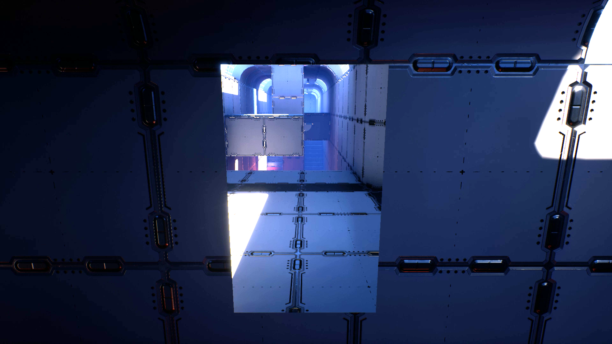

UPortal
Built using: Unreal Engine, Blender
A seamless real-time portal system built for Unreal Engine, inspired by Valve's game "Portal" released in 2007.
Rendering, teleportation, physical interaction and collision replication with the portals is 100% seamless.
The portal system is fully dynamic and easy to integrate into existing Unreal Engine projects for other Unreal Engine developers to use.
The project has been showcased at an exhibition at Tekniska Museet (Swedish National Museum of Science and Technology).